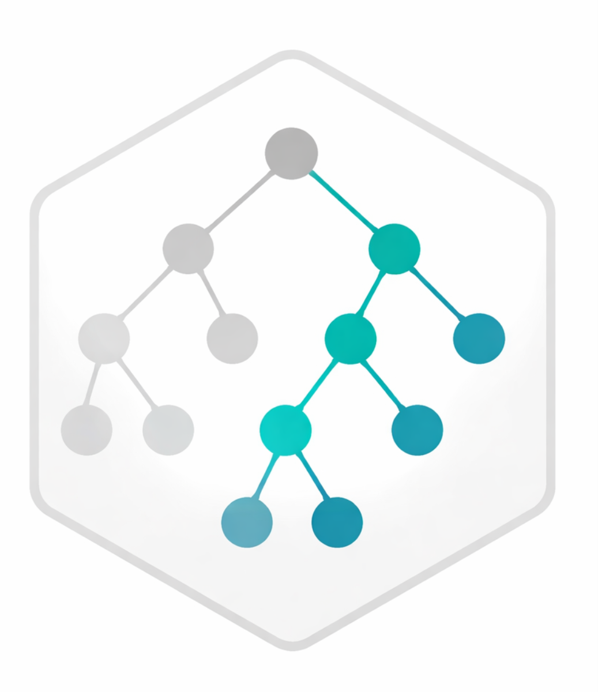

Context-aware restriction of the Gene Ontology (GO) hypothesis space for enrichment analysis.
GOcontext constructs context-specific GO subgraphs to restrict the set of GO terms tested in enrichment analysis. Starting from the Gene Ontology graph distributed in GO.db, organism-specific GO-to-gene mappings can be attached from an OrgDb, and the ontology can then be restricted to terms relevant to the current biological context.
By reducing the number of tested GO terms while preserving the underlying GO graph structure, GOcontext aims to decrease the multiple testing burden while maintaining a transparent and reproducible GO universe for enrichment analysis.
See the full documentation at the GOcontext website.
Installation
if (!requireNamespace("remotes", quietly = TRUE)) {
install.packages("remotes")
}
remotes::install_github(
"Thomas-Rauter/GOcontext", # GitHub repository
ref = "<tag>", # Version to install, e.g. v0.1.0
dependencies = TRUE, # Install all dependencies
upgrade = "always" # Always upgrade dependencies
# force = TRUE # when encountering issues
)Quick Start
Below is a minimal, conceptual workflow:
library(GOcontext)
library(org.EcK12.eg.db)
# 1) Load the GO DAG for one ontology
go <- load_go("BP")
# 2) Attach organism annotation
go <- attach_org(
go = go,
OrgDb = org.EcK12.eg.db
)
# 3) Restrict the graph to GO terms with mapped genes
go <- filter_mapped(go)
# 4) Interactively browse the GO hierarchy
sel <- browse_go_tree(go)
# 5) Restrict the graph to the selected GO branches
go_sub <- subset_go(
go = go,
ids = sel$ids,
mode = "keep"
)
# 6) Export enrichment tables
term2gene <- as_term2gene(go_sub)
term2name <- as_term2name(go_sub)
# 7) Run enrichment analysis
clusterProfiler::enricher(
gene = genes_of_interest,
TERM2GENE = term2gene,
TERM2NAME = term2name,
universe = background_genes
)